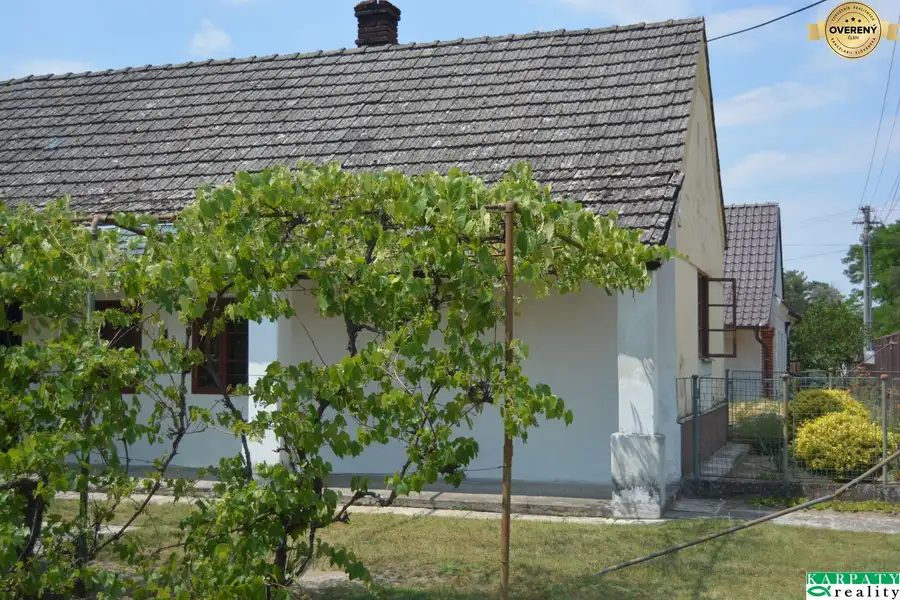
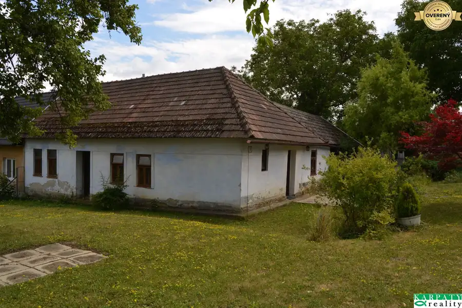
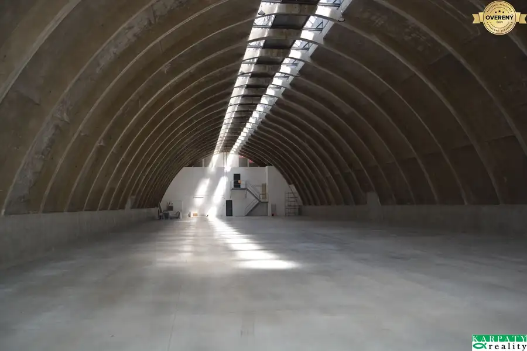
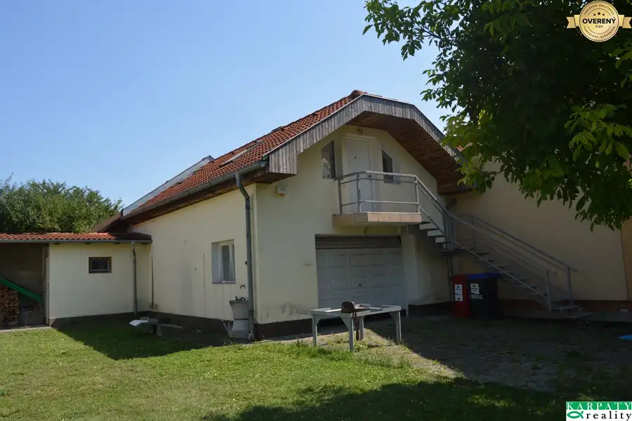
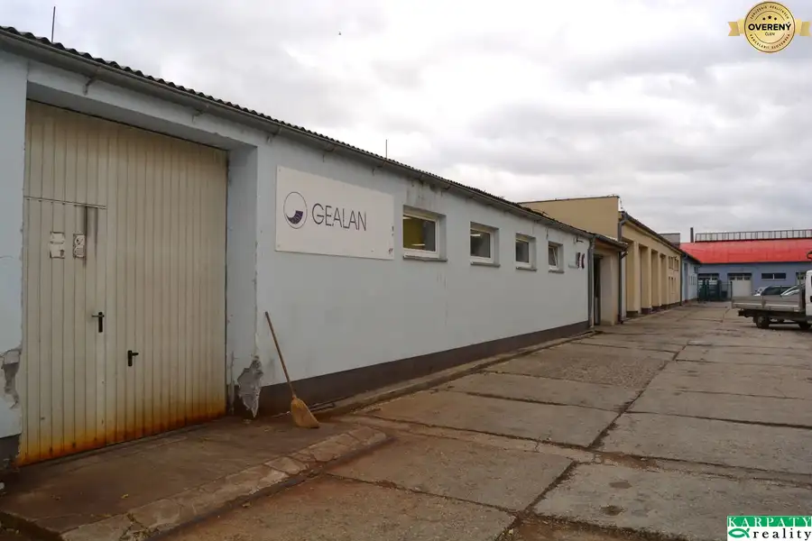
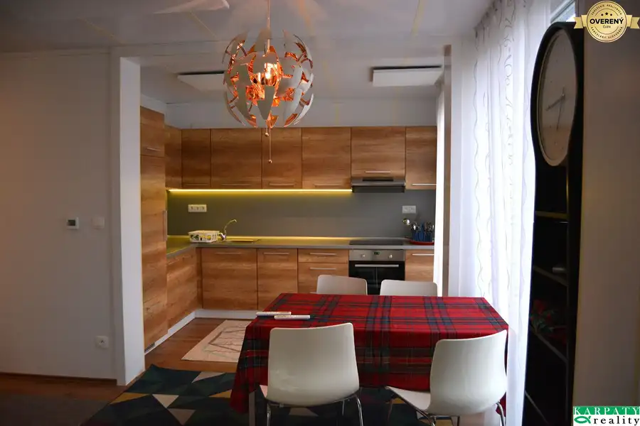
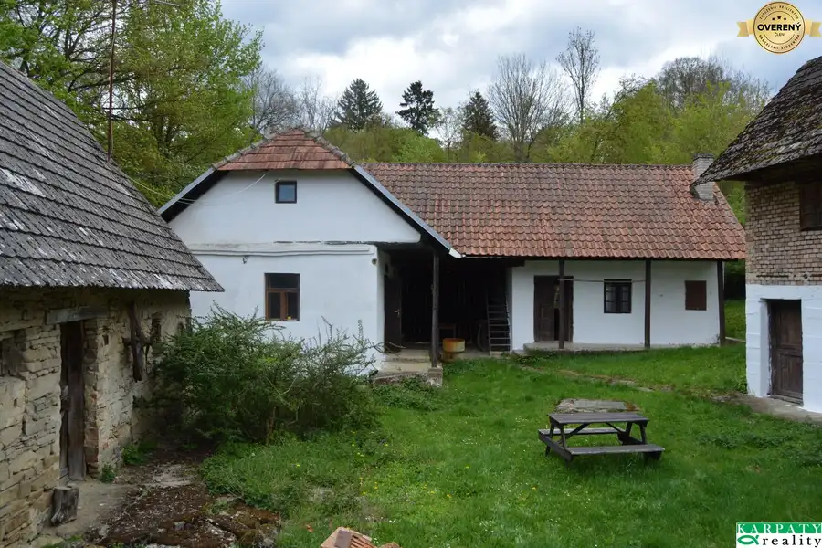
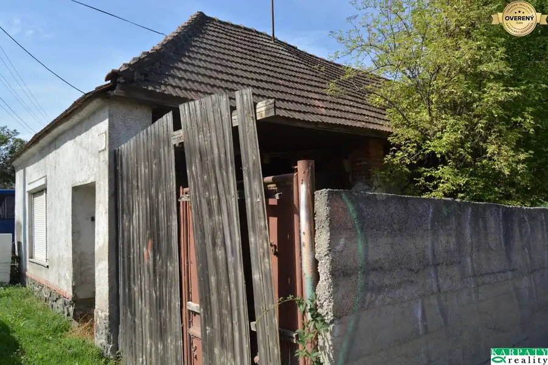
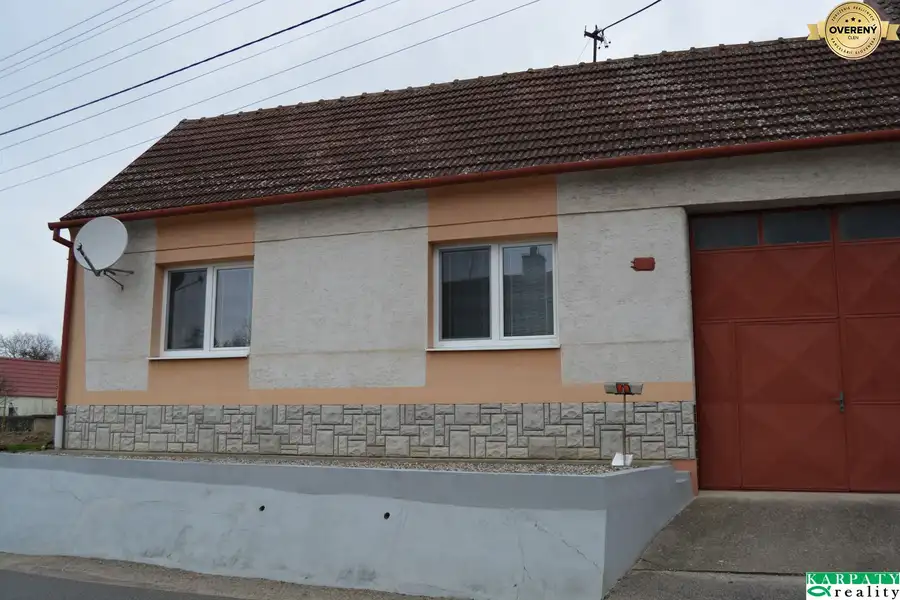

Aktuálna ponuka
10 nehnuteľností, predovšetkým rodinné domy, pozemky, byty. Každá má vlastnú stránku s fotkami, popisom a mapou.
Prezrieť ponukuLeonard HorváthRealitný maklér
Realitný maklér · KARPATY realmedia, s.r.o.
Predaj a prenájom nehnuteľností · Borský Svätý Jur, Bukovec, Poriadie




Pozemok10 525 000 €V blízkosti centra Piešťan, malý domček, garáž, pozemok pre bývanie! Piešťany 758 m² V kúpeľnom meste, v starej časti Piešťan, v blízkosti centra, ponúkame na predaj výnimočný stavebný pozemok. Nachádza sa vo vyhľadávanej lokalite, v…
Nebytové priestory10 7 000 €Polyfunkčný areál - haly, sklady na prenájom, predaj, Trnava! Trnava 1275 m² V priemyselnej časti Trnavy, v blízkosti napojenia na severný obchvat mesta Trnava, následne na diaľnicu D1 a rýchlostnú cestu R1, čo zaručuje…
Rodinné domy10 219 900 €Predaj! V lone Záhoria, novostavba s bazénom za cenu bytu v BA! Borský Svätý Jur 3-izbový73 m² V miestnej časti obce Borský Svätý Jur, na Záhorí, popri potoku Lakšár, v obkolesení borovicových lesov, mimo hlavnej cesty, leží malebná osada…
Rodinné domy10 149 900 €Výnimočná usadlosť na polosamote Myjavských kopaníc! Bukovec 4-izbový120 m² V lone pasienkov, lúk, lesov, pri dvoch potôčkoch, po spevnenej štrkovej poľnej ceste, ďaleko od ruchu mesta, na polosamote, pri malebnej obci…
Pozemok6 47 000 €Na predaj starý dom so stavebným pozemkom v Lošonci! Lošonec 80 m² Na okraji Malých Karpát, v údolí riečky Parná, v malebnej obci Lošonec, ponúkame na predaj starý dom so šikovným stavebným pozemkom o výmere 577 m2.…
Rodinné domy10 119 000 €Vydiecký dom s veľkým pozemkom a potenciálom, s drevom na kúrenie! Unín 3-izbový167 m² ZNÍŽENÁ CENA!!! V okrese Skalica, v malebnej obci Unín, s výbornou dostupnosťou Holíč, Hodonín, ponúkame na predaj rodinný dom o zastavanej ploche…Tomuto výberu zatiaľ nezodpovedá žiadna ponuka. Napíšte mi, čo hľadáte.
Volám sa Leonard Horváth. Som realitný maklér kancelárie KARPATY realmedia, s.r.o. a pôsobím predovšetkým v lokalitách Borský Svätý Jur, Bukovec, Poriadie a Hlohovec (Trnavský kraj).
10 nehnuteľností, predovšetkým rodinné domy, pozemky, byty. Každá má vlastnú stránku s fotkami, popisom a mapou.
Prezrieť ponukuBorský Svätý Jur, Bukovec, Poriadie, Hlohovec, Piešťany a okolie. Ponuku si môžete prezrieť podľa lokality.
Nehnuteľnosti v lokaliteOdhad trhovej ceny, príprava prezentácie, obhliadky, zmluvy a odovzdanie nehnuteľnosti.
Dohodnúť stretnutieNa čo sa pýtate najčastejšie, skôr než sa stretneme.
Odhad trhovej ceny vychádza z aktuálnych ponúk a predajov v lokalite, nie z cenníkových tabuliek. Podmienky Vám poviem pri prvom telefonáte.
Najprv obhliadka a odhad ceny, potom príprava prezentácie (fotografie, popis, inzercia), obhliadky so záujemcami, rezervačná zmluva, kúpna zmluva, návrh na vklad do katastra a odovzdanie nehnuteľnosti. O každom kroku viete vopred.
Najrýchlejšie cez WhatsApp alebo telefón. Termín stretnutia alebo obhliadky dohodneme podľa Vás.